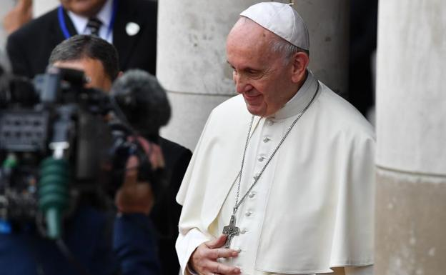

| El papa Francisco ha agarrado el toro por los cuernos y, en su primer discurso en Dublín, adonde llegó esta mañana para participar en el Encuentro Mundial de las Familias (EMF), ha afrontado el mayor problema que sufre tanto la comunidad católica local como el resto de la Iglesia universal: la pederastia. En el Castillo de Dublín y ante el primer ministro, Leo Varadkar, y las principales autoridades, Jorge Mario Bergoglio ha dicho que no podía «dejar de reconocer el grave escándalo» causado por los casos de abusos sexuales a menores cometidos por eclesiásticos en Irlanda.
Fue éste el primer país en verse sacudido por esta lacra al publicarse en 2009 un demoledor informe que desvelaba la existencia de más de 2.000 víctimas de sacerdotes y religiosos que abusaron sexualmente de ellos, los humillaron y maltrataron. Francisco ha reconocido el «fracaso de las autoridades eclesiásticas» al no ser capaz de «proteger y educar» a los más pequeños y afrontar de manera errónea «estos crímenes repugnantes», lo que ha suscitado «justamente indignación y permanece como causa de sufrimiento y vergüenza para la comunidad católica». Él mismo, destacó Bergoglio, comparte esos «sentimientos».
Son los mismos sentimientos de una parte significativa de la población irlandesa, que se ha sentido defraudada y asqueada por el comportamiento de la Iglesia ante esta lacra. Esa reacción explica el frío ambiente de las calles de Dublín ante la visita del Papa. No se vieron las grandes masas propias de los viajes del Pontífice a los países de mayoría católica. «Ya es tarde para pedir perdón y las buenas palabras, ahora lo que queremos son hechos concretos contra la pederastia y el encubrimiento», se lamentaba Gerry, un irlandés que paseaba ayer por las calles del centro de Dublín. |
 |
| Fue Benedicto XVI al que le tocó responder en un primer momento al estallido de la crisis de los abusos en Irlanda. Bergoglio recordó que su antecesor «no escatimó palabras» para reconocer la gravedad de lo sucedido y exigir que se tomaran «medidas verdaderamente evangélicas, justas y eficaces». Según Francisco, su «intervención franca y decidida» sigue sirviendo a las autoridades eclesiásticas para remediar los «errores del pasado» de manera que «no vuelvan a suceder».También se refirió a Irlanda del Norte el primer ministro, Leo Varadkar, quien deseó que Francisco pueda visitar esa región en el futuro. Varadkar, homosexual declarado, no tuvo empacho en subrayar los «aspectos oscuros» de la historia de la Iglesia católica en el país, que está marcada por «la pena y la vergüenza». Consideró que algunas heridas «siguen abiertas» y dejó claro que queda «mucho por hacer» con los supervivientes de abusos, a los que el Papa debe «escuchar» por encima de cualquier otra consideración. También le exigió «tolerancia cero» con los abusadores. |
Son los mismos sentimientos de una parte significativa de la población irlandesa, que se ha sentido defraudada y asqueada por el comportamiento de la Iglesia ante esta lacra. Esa reacción explica el frío ambiente de las calles de Dublín ante la visita del Papa. No se vieron las grandes masas propias de los viajes del Pontífice a los países de mayoría católica. «Ya es tarde para pedir perdón y las buenas palabras, ahora lo que queremos son hechos concretos contra la pederastia y el encubrimiento», se lamentaba Gerry, un irlandés que paseaba ayer por las calles del centro de Dublín. Aunque no quiso incluir en su viaje una visita a Irlanda del Norte, el Papa sí que tuvo presente ese territorio en su discurso al recordar que hace ya veinte años de la firma del Acuerdo del Viernes Santo. Dio gracias por estas «dos décadas de paz» y deseó que se consolide la situación para alcanzar un futuro «de concordia, reconciliación y confianza mutua». |
También se refirió a Irlanda del Norte el primer ministro, Leo Varadkar, quien deseó que Francisco pueda visitar esa región en el futuro. Varadkar, homosexual declarado, no tuvo empacho en subrayar los «aspectos oscuros» de la historia de la Iglesia católica en el país, que está marcada por «la pena y la vergüenza». Consideró que algunas heridas «siguen abiertas» y dejó claro que queda «mucho por hacer» con los supervivientes de abusos, a los que el Papa debe «escuchar» por encima de cualquier otra consideración. También le exigió «tolerancia cero» con los abusadores.
Aunque sigue siendo un país donde el 76% de sus ciudadanos se declaran católicos, Irlanda es hoy una nación «diferente» al pasado en la que la palabra de la Iglesia no tiene el peso de hace unas décadas. El primer ministro le recordó a Francisco las leyes sobre el divorcio, el aborto o las uniones entre personas del mismo sexo aprobadas en los últimos años y le pidió una «nueva relación» entre la Iglesia y el Estado irlandés. En ella la religión ya no debe ocupar «el centro de la sociedad», aunque mantenga «un lugar importante». |